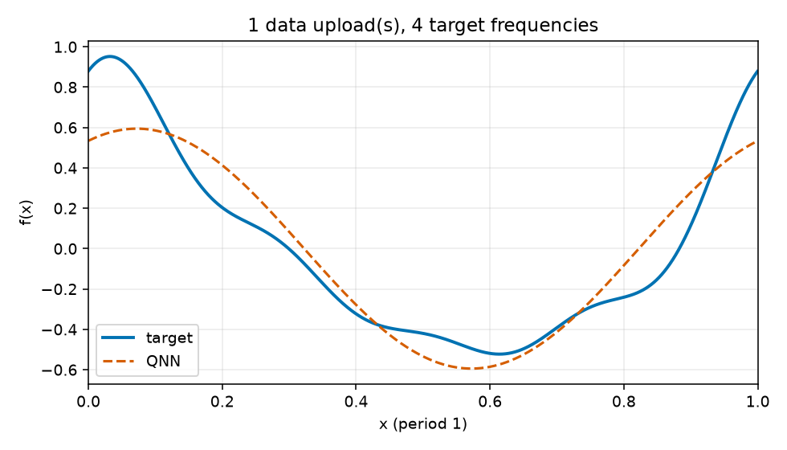
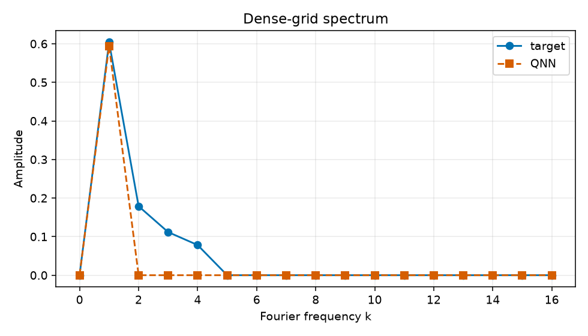

Uploads: 1; target frequencies: 4; train/validation/test: 64/128/512; objective: empirical training MSE only.
{
"run_id": "20261017T024018795411Z_reupload-1_k4_seed-0049_d83a169b",
"comparison_group": "periodic-function-mse-zero-offset-reupload-sweep-z1-readout",
"data_uploads": 1,
"n_target_frequencies": 4,
"seed": 49,
"data_seed": 314159,
"dataset_sizes": {
"train": 64,
"validation": 128,
"test": 512
},
"target_components": [
[
1,
0.55,
0.25
],
[
2,
0.16,
0.08
],
[
3,
0.1,
0.05
],
[
4,
0.07,
0.035
]
],
"target_offset": 0.0,
"objective": "training-set MSE only",
"optimizer": "L-BFGS-B",
"iterations": 5,
"function_evaluations": 56,
"optimizer_success": true,
"optimizer_message": "CONVERGENCE: NORM OF PROJECTED GRADIENT <= PGTOL",
"initial_train_mse": 0.022174793062605728,
"final_train_mse": 0.021412565272450796,
"validation_mse": 0.02584059963916338,
"test_mse": 0.02659685709569562,
"known_frequency_fourier_baseline_test_mse": 2.8845849053330533e-31,
"target_support": [
1,
2,
3,
4
],
"predicted_support": [
1
],
"frequency_support_threshold_function_amplitude": 0.001,
"support_precision": 1.0,
"support_recall": 0.25,
"target_amplitudes_k0_to_16": [
3.337987438539747e-17,
0.6041522986797286,
0.1788854381999832,
0.11180339887498951,
0.07826237921249267,
3.111669413838609e-17,
1.0782582689195332e-17,
1.9716710816326602e-17,
6.698493011886988e-18,
1.1635421212890542e-17,
2.525458054938055e-18,
8.020732245388063e-18,
4.685641790835123e-18,
4.924865114041699e-18,
3.888524730395962e-18,
1.488532939329537e-17,
8.37948952971858e-18
],
"predicted_amplitudes_k0_to_16": [
4.9022878855289886e-17,
0.5943307477128486,
1.968102604052273e-17,
1.960272917742727e-17,
1.7126447611616615e-18,
1.8918307703571252e-17,
9.229674985449429e-19,
1.975932995425874e-17,
5.804927722194947e-18,
1.9707030551613508e-17,
2.5094907063199215e-18,
4.865052003875588e-18,
8.949051558099845e-18,
5.5721801936646466e-18,
8.466382559473291e-19,
1.4024730586778086e-17,
9.311561859331797e-18
],
"frequency_amplitude_rmse_k0_to_16": 0.05462248129252871,
"artifacts": [
"dataset.npz",
"metrics.jsonl",
"parameters.npz",
"parameters.json",
"evaluation_outputs.npz",
"function_fit.png",
"spectrum.png",
"report.html"
]
}
